Linux6.1.36_User’s Compilation Manual_V1.0
Document classification: □ Top secret □ Secret □ Internal information ■ Open
Copyright
The copyright of this manual belongs to Baoding Folinx Embedded Technology Co., Ltd. Without the written permission of our company, no organizations or individuals have the right to copy, distribute, or reproduce any part of this manual in any form, and violators will be held legally responsible.
Forlinx adheres to copyrights of all graphics and texts used in all publications in original or license-free forms.
The drivers and utilities used for the components are subject to the copyrights of the respective manufacturers. The license conditions of the respective manufacturer are to be adhered to. Related license expenses for the operating system and applications should be calculated/declared separately by the related party or its representatives.
Application Scope
This manual is mainly applicable to the Linux4.1.15 operating system on the Forlinx OKMX6ULL platform. Other platforms can also refer to it, but there will be differences between different platforms. Please make modifications according to the actual conditions.
Revision History
Date |
Version |
Modification |
|---|---|---|
20/01/2022 |
V1.0 |
Initial Version |
Overview
This manual is designed to enable you to quickly understand the compilation process of the products and familiarize yourself with the compilation methods of Forlinx products. The application needs to be cross-compiled on an Ubuntu host before it can run on the development board. By following the methods provided in the compilation manual and performing practical operations, you will be able to successfully compile your own software code.
The manual is mainly divided into four chapters:
Chapter 1. is mainly about the installation of VMware, and the version used is VMware® Workstation 15 Pro15.1.0. Users need to install VMware before using the ubuntu development environment;
Chapter 2. mainly introduces the method of loading the ubuntu development environment provided by Forlinx, and the development environment is 64-bit ubuntu18.04;
Chapter 3. mainly introduces the method of building a new ubuntu development environment. This section uses the 64-bit Ubuntu 18.04 as an example to describe the process of Ubuntu creation, cross-compiler installation, and QT Creator installation. Due to different computer configurations, unexpected problems may occur in the building process. It is recommended that beginners directly use the environment we have built;
Chapter 4. mainly describes the compiling method of the source code related to the development board, including the kernel source code compilation and the application program compilation.
1. VMware Virtual Machine Software Installation
1.1 VMware Software Download and Purchase
Go to the VMware website https://www.vmware.com/cn.html to download Workstation Pro and get the product key. VMware is a paid software that requires purchasing, or you can choose to use a trial version.

After the download is complete, double-click the installation file to start the installation program.
1.2 VMware Software Installation
Double-click the startup program to enter the installation wizard.

Click on “Next”.

Check the terms in the license agreement that I accept, then click “Next”.
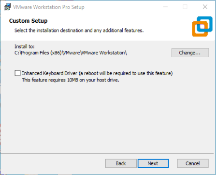
Modify the installation location to the partition where you want to install the software on your computer, then click ‘“Next”.

Check and click on “Next”.

Check the box to add a shortcut, then click “Next”.

Click “Installation”.

Wait for the installation to complete.

Click “Finish” to try it out. If users need to use it for a long time, they need to buy it from the official and fill in the license.
2. Loading the Existing Ubuntu Development Environment
Note:
It is recommended for beginners to directly use the pre-built virtual machine environment provided by Forlinx, which already includes installed cross-compiler and Qt environment. After understanding this chapter, you can directly jump to the compilation chapter for further study;
The development environment provided is: forlinx (username), forlinx (password).
There are two ways to use a virtual machine environment in VMware: one is to directly load an existing environment, and the other is to create a new environment. Let’s first talk about how to load an existing environment.
First, download the development environment provided by Forlinx. In the development environment documentation, there should be an MD5 checksum file. After downloading the development environment, you should verify the integrity of the compressed package using the MD5 checksum. (You can use an on-line MD5 checksum tool or download a specific MD5 checksum tool for this purpose). To check if the checksum in the verification file matches the checksum of the file itself. If they match, the file download is successful. If they don’t match, it suggests that the file may be corrupt, and you should consider downloading it again.
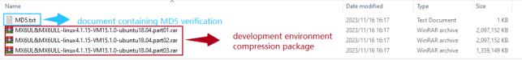
Select all the compressed packages and right click to extract them to MX6UL&MX6ULL-linux4.1.15-VM15.1.0-ubuntu18.04:
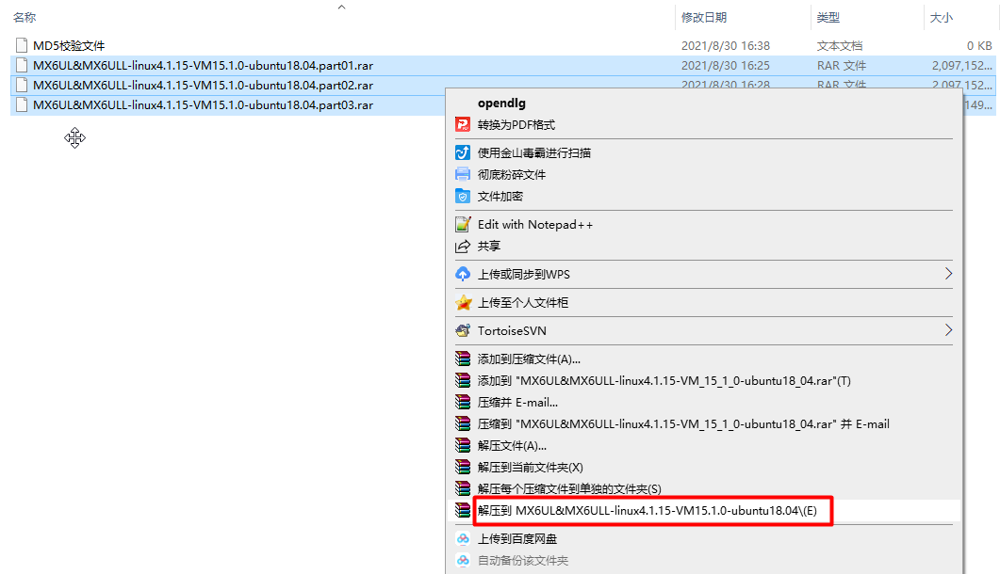
After the decompression is completed, as shown in the figure below:
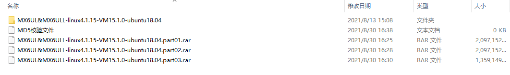
The file “Ubuntu18.04 64-bit.vmx” in the MX6UL&MX6ULL-linux4.1.15-VM15.1.0-ubuntu18.04 folder is the file that needs to be opened by the virtual machine.
Open the installed virtual machine.
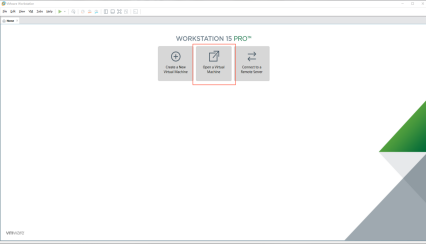
Navigate to the directory where the recently extracted MX6UL&MX6ULL-linux4.1.15-VM15.1.0-ubuntu18.04 virtual machine file is located, and double-click on the startup file to open it.

Turn on this virtual machine after loading is complete to run it and enter the system’s interface.
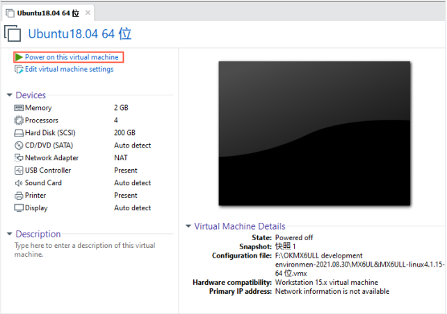
The development environment is: forlinx, and the password is: forlinx. After filling in the password, select Sign in to log in.


3. New Ubuntu Development Environment Setup
Note: Beginners are not recommended to set up a system on their own. It is recommended to use an existing virtual machine environment. If you do not need to set up the environment, you can skip this section.
This chapter mainly explains the process of setting up the Ubuntu system, installing the cross-compiler, and installing Qt Creator. If the user is not using Qt, the installation of Qt Creator can be ignored.
3.1 Ubuntu System Setup
3.1.1 Creating an Ubuntu Virtual Machine
Open the VMware software, click on create a new virtual machine. Enter the following interface

Choose custom, and click “Next”.
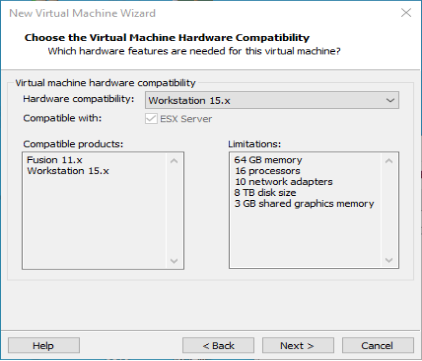
Select the compatibility with the corresponding version of VMware, which can be found in Help->About VMware Workstation, and click “Next”.

Select Install the operating system later and click “Next”.
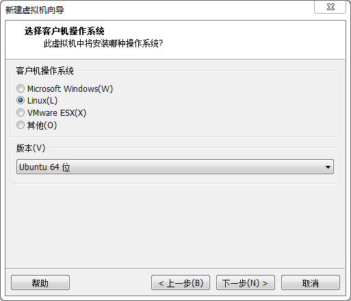
Leave the default and click “Next”.
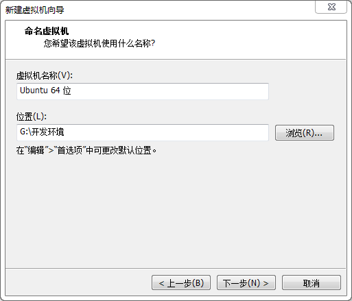
Modify the virtual machine name and installation location, click “Next”.


Again, set the memory size as appropriate.
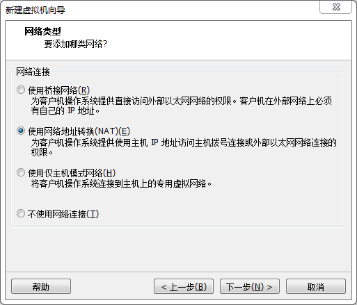
Set the network type, the default is NAT mode, click Next. Keep the default values for the remaining steps until you reach the step to specify the disk capacity.
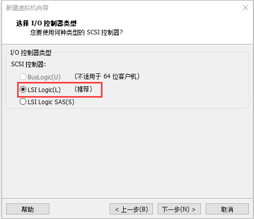
The default selection for the IO controller type here is LSI.
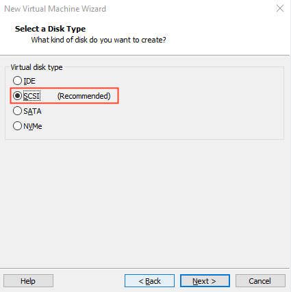
The default selection here is also SCSI.

Choose to create a new virtual disk here.

Set the disk size to 200 gigabytes and select the form in which the disk exists, then click “Next” to finish.
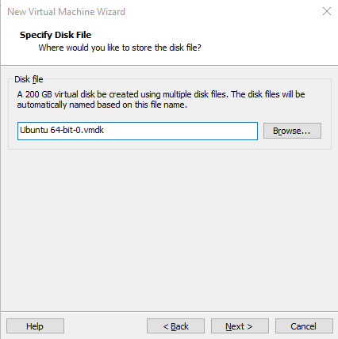
Specify the disk file, the default one here is fine.
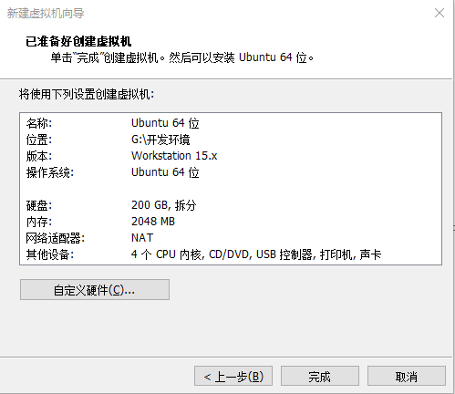
Click Finish by default.
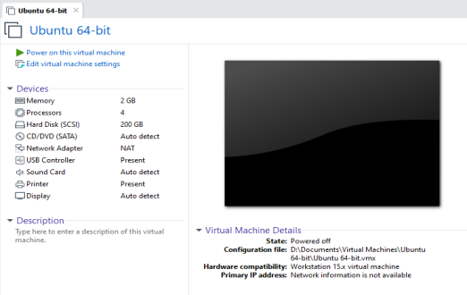
The virtual machine creation is now complete.
In the next section, we will introduce the installation of Ubuntu system in the virtual machine, which is similar to the installation method in the real machine. Here we describe the method of installing Ubuntu system in a virtual machine.
3.1.2 System Installation
The Ubuntu version chosen to install is 18.04. First, go to the official Ubuntu website to obtain the 64-bit image of Ubuntu 18.04. The download address is: http://releases.ubuntu.com/18.04/. Download the version: “ubuntu-18.04.5-desktop-amd64.iso”.
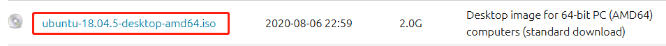
Right-click on the newly created Ubuntu 64-bit and select Settings from the pop-up menu.
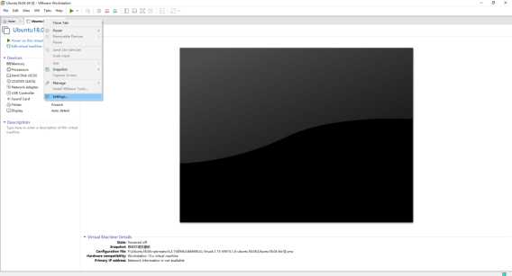
The “Virtual Machine Settings Menu” pops up as shown below:
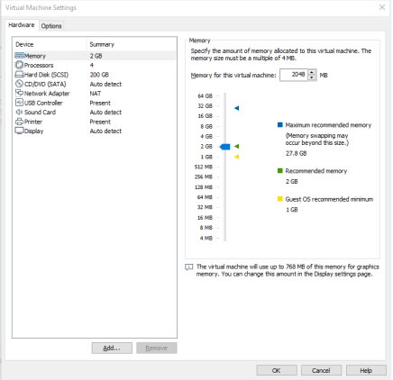
Click on CD/DVD (SATA), select “Use ISO image file,” browse and choose the previously downloaded Ubuntu image, then click “OK” to confirm.
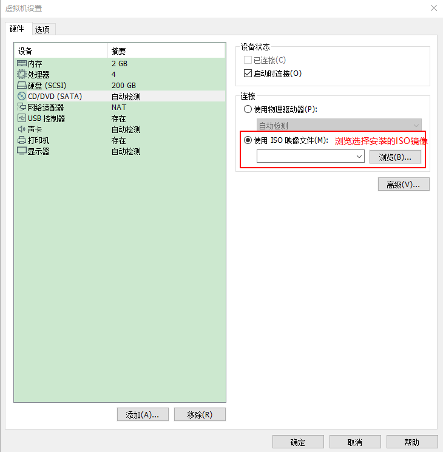
After setting up the image, ensure that the network is available. Then, start the virtual machine and proceed with the installation of the Ubuntu image.
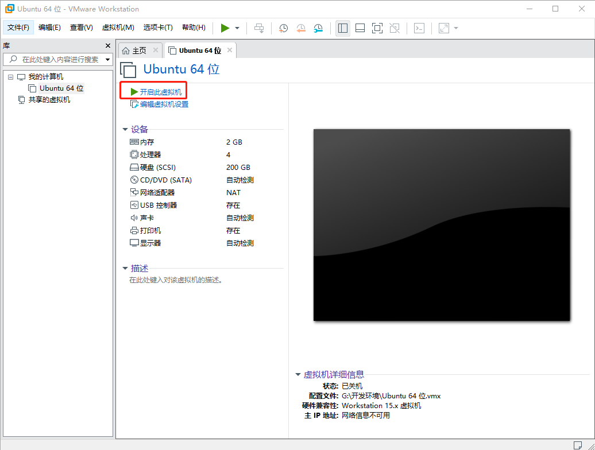
After starting the virtual machine, wait for the installation interface to appear as shown below.

After selecting the language on the left side as shown in the image, click “Install Ubuntu”, and the language selection interface will pop up. Ubuntu default language is English, of course, you can also choose others, the default choice of language in the later stage can also be reset,after selection then click continue.

Next, by default, select continue to finish the installation, the installation process will be very slow, then click “continue”:

Next, select continue by default to continue the installation, the installation process will be very slow, and then click “continue”:


Next, select the timezone. You can either click on the Shanghai timezone or enter “Shanghai” (or choose the appropriate timezone based on your location). Then, click “Continue” to proceed. Finally, set your username and password and click “continue” to automatically install the program:

The installation process is shown in the figure below, you can skip it if the network is bad, it will not affect the installation.
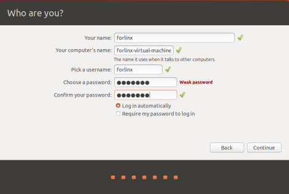
After the installation is completed, as shown in the following figure, click “Restart Now” (or click” Restart Client “):
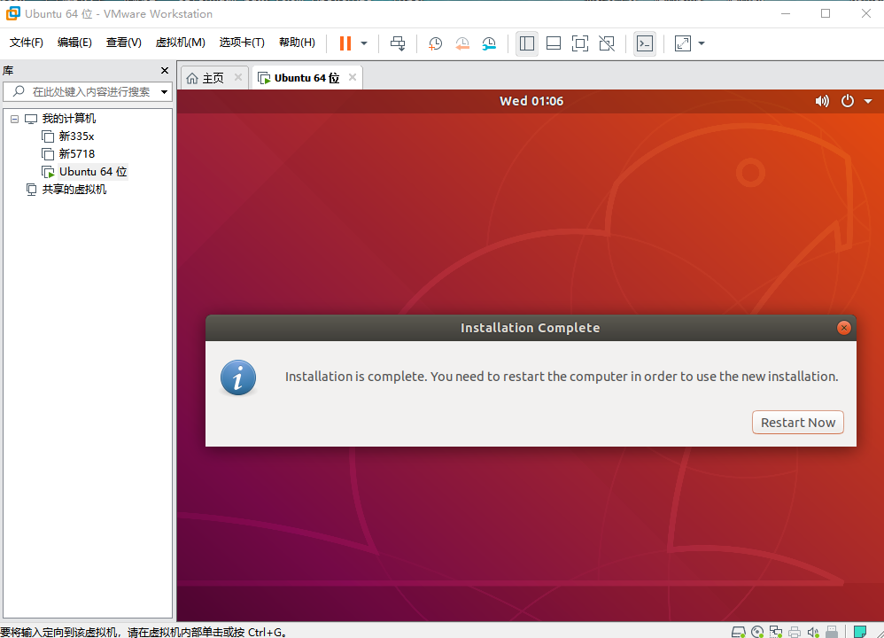

After the reboot, you need to log in with your username and password, and the system interface is shown below after logging in:


Above, the Ubuntu system installation is completed by the following figure configuration, click “OK”, and then re-open the virtual machine to see if you can start Ubuntu normally.
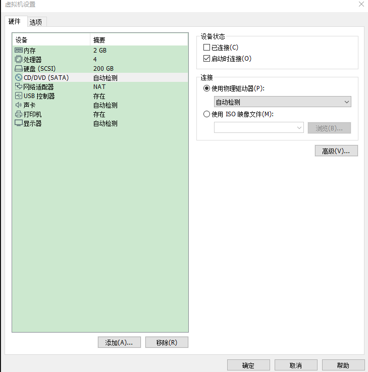
3.1.3 Basic Ubuntu Installation
After installing the Ubuntu 18.04 operating system, there are a few configurations to make.
VMware Tools Installation:
Next, install VMware Tools. Without installing this tool, you won’t be able to copy and paste and drag file between the Windows host and the virtual machine. First click on “Virtual Machines” on the VMware navigation bar, then click “Install VMware Tools” in the drop-down box.
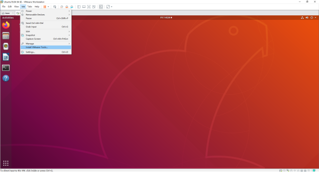
Once done, enter Ubuntu and the VMware Tools CD icon will appear on your desktop, click into it:

Double-click on the VMwareTools icon, go to it and see a zip file VMwareTools-10.3.10-12406962.tar.gz (it may be different for different VM versions).

Copy the file under the home directory (i.e., the directory of the home personal username):


Press [Ctrl+Alt+T] to bring up the terminal command interface, and use the tar command to decompress the VMware tools installation package (using the sudo command will prompt for the password, according to the prompts directly enter the password enter can be used, Linux system password input does not show):
forlinx@ubuntu:~$ sudo tar xvf VMwareTools-10.3.10-12406962.tar.gz
[sudo] password for forlinx:
After executing the extract command, use ls to view the file directory vmware-tools-distrib, and go to the directory
forlinx@ubuntu:~$ ls
Desktop examples.desktop nfs snap tftp VMwareTools-10.3.10-12406962.tar.gz vmware-tools-distrib work
forlinx@ubuntu:~$ cd vmware-tools-distrib/ //Use the CD command to enter the directory
forlinx@ubuntu:~/vmware-tools-distrib$ ls //View the files in this directory
bin caf doc etc FILES INSTALL installer lib vgauth vmware-install.pl
In the current directory, enter sudo ./vmware-install.pl to install, enter the password after pressing Enter, and then start the installation. When you encounter yes, enter yes, and press Enter for the rest to install by default.
forlinx@ubuntu:~/vmware-tools-distrib$ sudo ./vmware-install.pl
[sudo] password for forlinx: //Enter the password of the forlinx account, no display, cannot see the input content.
The installation process information is long, here omitted.
open-vm-tools packages are available from the OS vendor and VMware recommends
using open-vm-tools packages. See http://kb.vmware.com/kb/2073803 for more
information.
Do you still want to proceed with this installation? [no] yes //Enter yes
... ...
After completing the VMware tools tool, you can achieve file copy and paste, virtual machine adaptive full display and other functions between Windows and Ubuntu. If the virtual machine cannot be displayed in full screen, you can click View, select Auto Resize, and click Auto Adapt to Client to display the virtual machine in full screen. VMware tools is installed successfully.
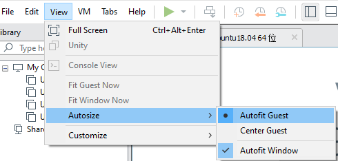
Basic Settings:
Make most of the system settings in the location shown below. A lot of the setup requirements on Ubuntu can be done here.

3.1.4 Ubuntu Network Settings
NAT Mode
Before using the network, make sure that our virtual machine can connect to the Internet, open the virtual machine settings, and change the network bridge mode in the network adapter to “NAT mode”:
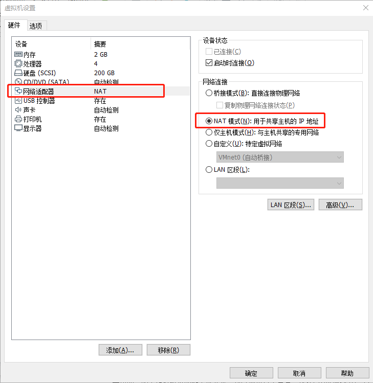
When the VMware virtual NIC is set to NAT mode in a virtual machine, the network in the Ubuntu environment can be set to dynamic IP. The virtual NAT device and the host NIC are connected to communicate for Internet access in this mode. This is the most common way for our VM to get on the extranet.


The network is set to dynamic ip.

Bridge Mode:
If TFTP, SFTP and other servers are used, it is necessary to set the network connection mode of the virtual machine as bridging mode. When the VMware virtual NIC is set to bridge mode, the host NIC and the VM NIC communicate via a virtual bridge, which requires the Ubuntu IP to be set to the same network segment as the host IP.
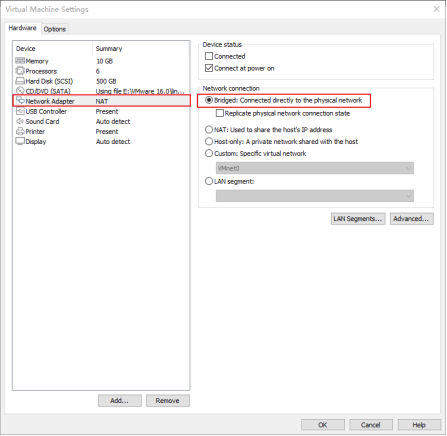


设置静态ip，此时Ubuntu的IP与主机IP需设置在同一个网段。

Note: The IP and DNS involved in the network settings section should be set according to the user’s own actual environment, the manual is an example.
3.1.5 U Disk Loading
Open VM Settings, USB Controller, select USB 3.0 in Compatibility and “OK”. As shown in the picture below, since most computers nowadays support USB3.0 ports, if we don’t set it up, when we plug in the USB3.0 port, we can’t connect to the virtual machine. The principle is as follows:

After the virtual machine boot, insert the U disk, the virtual machine will be more in the lower right corner of the icon similar to the “U disk”, right-click –> connect, and then you can see in the file system to see more than a directory, that the U disk loaded successfully, as shown in the figure:
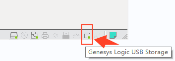

3.1.6 Required Library Installation
Before development, there are some other necessary libraries, we use the following commands to install them one by one, before installation, you need to ensure that the network can be used normally, you can get on the extranet:
forlinx@ubuntu:~$ sudo apt-get update // Update the information of download sources
forlinx@ubuntu:~$ sudo apt-get install build-essential // Provide the list information of software packages necessary for compiling programs
forlinx@ubuntu:~$ sudo apt-get install libncurses* // Used to generate text-based user interfaces
forlinx@ubuntu:~$ sudo apt-get install lzop // Compression and decompression tool based on the Lzo library
forlinx@ubuntu:~$ sudo apt-get install net-tools // Network configuration tools
3.2 Setting up A Cross-compilation Environment
The cross-compilation environment can be subdivided into installing the SDK (which contains the cross-compilation toolchain) and setting cross-compilation environment variables.
3.2.1 SDK Installation
Information/tool/fsl-imx-x11-glibc-x86_64-meta-toolchain-qt5-cortexa7hf-neon-toolchain-4.1.15-2.0.0.sh
Copy the above script to any directory like /home/forlinx/ and execute it there:
forlinx@ubuntu:~$ ./fsl-imx-x11-glibc-x86_64-meta-toolchain-qt5-cortexa7hf-neon-toolchain-4.1.15-2.0.0.sh
The command line prompts: Enter target directory for SDK (default): /opt/fsl-imx-x11/4.1.15-2.0.0)
Press the Enter key twice in a row, the program will automatically install the cross-compilation toolchain (the cross-compilation toolchain can be installed once, you don’t need to reinstall it when you change terminals or reboot the system). Make sure that the network is open during the installation process and that the Ubuntu system has access to an extranet.
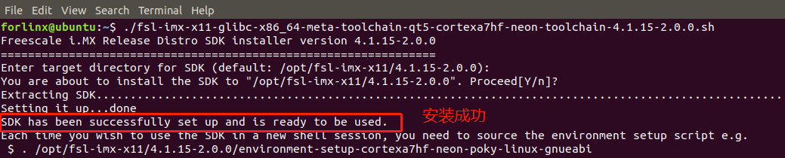
You can determine whether the installation was successful by outputting the printed information.
3.2.2 Environment Variables Settings
Note:
After setting the environment variables, you don’t need to reset them the next time you compile as long as you don’t change terminals;
If you reopen a new terminal or switch accounts, you need to reset the environment variables before compiling.
The main purpose of setting up the compilation environment is to specify the target architecture and cross-compilation toolchain, as well as the paths of some libraries used in the compilation process, etc. Use the following commands to configure the compilation environment (.followed by a space):
. /opt/fsl-imx-x11/4.1.15-2.0.0/environment-setup-cortexa7hf-neon-poky-linux-gnueabi

Then use the command arm-poky-linux-gnueabi-gcc -v to determine if the setup was successful (note: -v is preceded by a space):
Normally the gcc version information is printed, gcc version 5.3.0 (GCC):

3.3 Qt Creator Installation
Qt Creator is a cross-platform QT integrated development environment (IDE) that includes advanced C + + code editors, project and build management tools for QT application framework design and application development. Qt Creator 3.2.1 installation package selected for this installation:qt-creator-opensource-linux-x86_64-3.2.1.run. Copy the installation package to the path /home/forlinx/work/. Installation package acquisition site:https://download.qt.io/archive/qtcreator/3.2/3.2.1/
3.3.1 Modifying the QT Configuration File
After installing the SDK, modify the QT profile qmake. Conf.
Open the configuration file to be modified, the path of the file in the development environment is: /opt/fsl-imx-x11/4.1.15-2.0.0/sysroots/cortexa7hf-neon-poky-linux-gnueabi/usr/lib/qt5/mkspe
cs/linux-oe-g++/qmake.conf
Remove the line include(…) from the file qmake.conf. /oe-device-extra.pri) line in the qmake.conf file.
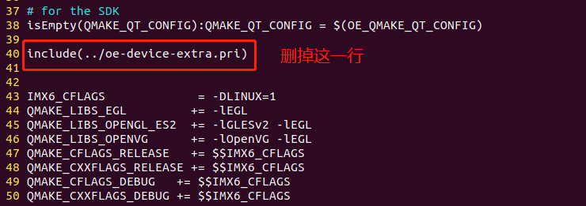
Save and exit after making changes
3.3.2 Qt Creator Installation
Execute the following command in the/home/forlinx/work/path to install Qt Creator:
forlinx@ubuntu:~/work$ chmod u+x qt-creator-opensource-linux-x86_64-3.2.1.run
forlinx@ubuntu:~/work$ ./qt-creator-opensource-linux-x86_64-3.2.1.run
Then the installation window of the graphical interface will pop up, and install according to the instructions:

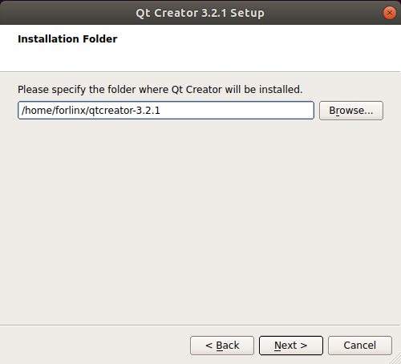
Users can set the installation path according to their own habits.
Execute the following command to open Qt Creator in the background, and users should follow their actual installation path when opening it:
forlinx@ubuntu:~$ /home/forlinx/qtcreator-3.2.1/bin/ qtcreator.sh &

The Qt Creator tool screen appears. Qt Creator is installed.
3.3.3 Environment Configuration
Note:
Be sure to configure the environment variables first (see “3.2.2 Environment Variables Setting”), then open the Qt Creator with the command;
Open Qt Creator according to your actual installation path.
Qt is a cross-platform graphics development library, which supports many operating systems. Before compiling, you need to configure the compiling environment of Qt Creator.
3.3.3.1 Configuration of the Cross-compiler
1. Click Qt Creator Tools ->Options->Build & Run->Compilers， and then click Add ->GCC;
2. Name enters GCC;
3. Compiler Path Click Browse to select the path of the cross-compiler as: /opt/fsl-imx-x11/4.1.15-2.0.0/sysroots/x86_64-pokysdk-linux/usr/bin/arm-poky-linux-gnueabi/arm-poky-linux-gnueabi-g++ As shown in the following figure:
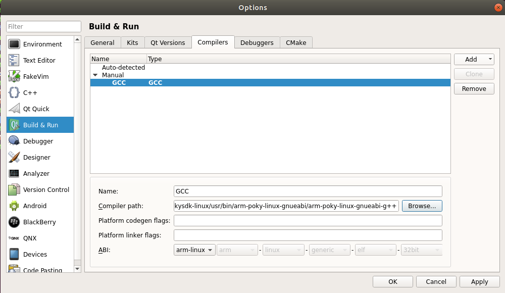
4. Then click Apply and OK
3.3.3.2 Qt Versions Configuration
1. Click Qt Creator Tools ->Options->Build & Run->Qt Versions;
2. Then click Add, a pop-up dialog box to select the/opt/fsl-imx-x11/4.1.15-2.1.0/sysroots/x86_64-pokysdk-linux/usr/bin/qt5/qmake;
3. Click open to add.
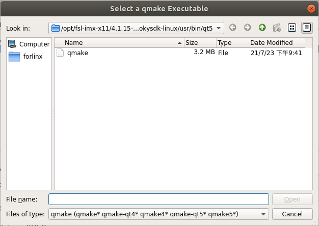
4. It will then return to the Qt Version configuration box, and the Version name will be entered in the Qt 5.6.2.
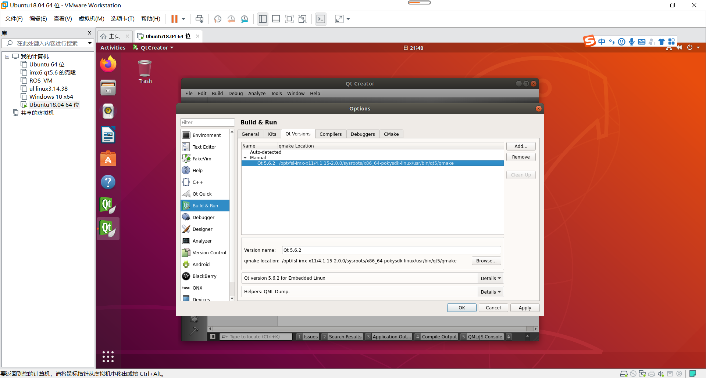
5. Then click “Apply and OK”.
3.3.3.3 Kits Configuration
Kits is a build kit for building and selecting development build environments useful for projects with multiple QT libraries. Add the previously added cross-compiler and QT Version to Kits to build a compilation environment suitable for the development board.
1. Click Qt Creator 的Tools ->Options->Build & Run->Kits，and then click Add; the configuration section appears;
2. Name input qt5.6.2;
3. Compiler selects GCC;
4. Qt Version Qt 5.6.2;
5. Qt mkspec write linux-oe-g++.

6. Then click “Apply and OK”.
3.3.4 Installation Issues
Note: The following presents some problems and solutions encountered during the installation of Qt Creator 3.2.1. The issues may differ depending on the Ubuntu and Qt Creator version used. The example below details one specific installation case, and serves only as a reference. Users should focus on their own actual situation and resolve any issues accordingly.
1. Opening Qt Creator appears qtcreator-3.2.1/lib/qtcreator/plugins/libHelp.so: Cannot load library /home/forlinx/qt; You cannot use help to report an error. You need to modify the software source and download and install some installation packages;
Method:
1) Add mirror sources to sources.list in etc/apt, use sudo vi /etc/apt/sources.list to open the file and add them at the end: deb http://archive.ubuntu.com/ubuntu/ trusty main universe restricted multiverse；
Inform Ubuntu to enable the new update source: sudo apt-get update
3) Install the relevant installation package:
sudo apt-get install libgstreamer0.10-dev
sudo apt-get install libgstreamer-plugins-base0.10-dev
2. Open the project file in Qt Creator with an ordinary account, and there is a write permission error;
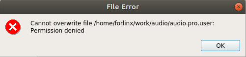
Solutions:
1) Check if the original qt file, under the current account, has executable permissions;
2) Add writable permissions to the user group: sudo chmod -R o+w audio/.
4. Related Code Compilation
Note: This chapter uses the development environment with SDK (including cross-compilation chain) installed by default, and the development environment provided by Forlinx can directly operate this chapter. If users use their own development environment, they need to refer to the previous section to build the environment.
This chapter mainly describes the compilation methods of the development board-related source code, including kernel source code compilation, making file system methods, and application program compilation methods.
4.1 Preparation Before Compilation
4.1.1 Description of the Environment
Development environment OS: Ubuntu18.04 64-bit version
Cross tool chain: arm-poky-linux-gnueabi-gcc 5.3.0
The board uses the Bootloader version: u-boot-2016.03.
Development board kernel: Linux -4.1.15
Development board porting QT version: qt5.6.2
4.1.2 Source Code Copy
Kernel Source: User Profile \ Linux \ source \ kernel \ linux-4.1.15.tar.bz2
File system: User Profile \Linux\ mirror \ rootfs-console.tar.bz2 and rootfs-qt.tar.bz2
Command line test program: User Data\Linux\Test Program\cmd.
QT test program: User Data\Linux\Test Program\qt5.6.
There are many kinds of file transfers between ubuntu and Windows hosts. After installing VMware Tools, you can set up a virtual machine shared folder to mount the file directory of the Windows host to ubuntu for file sharing.
Click “Virtual Machine” in the menu bar and select “Settings”.
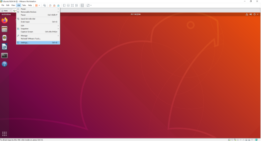
Click “Options”, enable “Shared Folders”, set the shared directory on the Windows host, and click “OK”.

After the virtual machine’s file sharing is set up, put the following items for testing: the kernel source code linux-4.1.15.tar.bz2, the file system (rootfs-console.tar.bz2 is used as an example in this section), the command line test program wdttest.c, and the QT test program audio into the shared folder on the Windows host.
The shared folder is in the mount directory /mnt/hgfs/share in ubuntu；view the files in the mount directory
forlinx@ubuntu:~$ ls /mnt/hgfs/share/
audio linux-4.1.15.tar.bz2 rootfs-console.tar.bz2 wdttest.c
Copy the source code from the shared folder to ubuntu/home/forlinx/work.
forlinx@ubuntu:~$ sudo cp -r /mnt/hgfs/share/audio /home/forlinx/work/
[sudo] password for forlinx:
forlinx@ubuntu:~$ sudo cp /mnt/hgfs/share/linux-4.1.15.tar.bz2 /home/forlinx/work/
forlinx@ubuntu:~$ sudo cp /mnt/hgfs/share/rootfs-console.tar.bz2 /home/forlinx/work/
forlinx@ubuntu:~$ sudo cp /mnt/hgfs/share/wdttest.c /home/forlinx/work/
forlinx@ubuntu:~$ cd /home/forlinx/work/
forlinx@ubuntu:~/work$ ls
audio linux-4.1.15.tar.bz2 rootfs-console.tar.bz2 wdttest.c //File copy succeeded
forlinx@ubuntu:~/work$
4.1.3 Environment Variables Settings
Note: After switching accounts, you need to set the environment variables again.
To set environment variables before compiling related source code. When compiling the kernel, it is recommended to use the root account to reduce some permission problems. The following source code compilations default to having environment variables set. Set the environment variable requires the following command:
. /opt/fsl-imx-x11/4.1.15-2.0.0/environment-setup-cortexa7hf-neon-poky-linux-gnueabi
4.2 Kernel Compilation
Note:
After the kernel source code is decompressed for the first time, the source code needs to be compiled as a whole;
After the overall compilation, it can be compiled separately according to the actual situation.
Switch to the root account and extract the kernel source code copied to the /home/forlinx/work directory using the tar command to the kernel source path.
forlinx@ubuntu:~/work$ sudo su // Switch to the root user identity
[sudo] password for forlinx: // Enter the password for the forlinx account as prompted. The input is not echoed.
root@ubuntu:/home/forlinx/work# tar xvf linux-4.1.15.tar.bz2 // Extract the kernel source code
… …The extraction information is omitted here.
root@ubuntu:/home/forlinx/work# cd linux-4.1.15 // Enter the kernel source code directory
Reset the environment variables after switching accounts:
. /opt/fsl-imx-x11/4.1.15-2.0.0/environment-setup-cortexa7hf-neon-poky-linux-gnueabi

4.2.1 Linux-4.1.15 Kernel Full Compilation
In the source code directory, there is a compilation script named “build.sh”. Running this script will compile the entire source code.
root@ubuntu:/home/forlinx/work# cd linux-4.1.15
The following operations need to be done in the source directory to compile the kernel methods:
root@ubuntu:/home/forlinx/work/linux-4.1.15# ./imx6ull_c_build.sh
After executing the compilation, there is a lot of information generated, so only the last part need to be captured.

After a successful compilation, module files with the extension “.ko” will be generated. In the directory “linux-4.1.15/arch/arm/boot/”, a file named “zImage” will be generated. In the directory “linux-4.1.15/arch/arm/boot/dts/”, related dtb (Device Tree Blob) files will be generated. Please refer to the separate section on compiling Device Trees for detailed information.
Explanation of some of the commands in build.sh:
File |
Description |
|---|---|
make imx6ull_defconfig |
1. This command loads a configuration file into .config (which is read from .config when menuconfig does graphical configuration); |
make zImage |
To compile “zImage”, after a successful compilation, the “zImage” file |
make dtbs |
Compile the device tree. Generate the corresponding dtb file under |
make modules |
Compile module |
make distclean |
The latest.config is cleared and the kernel needs to be reconfigured after the operation. |
4.2.2 Separate zImage Compilation
The user operates under the kernel source path, provided that the environment variables are set.
root@ubuntu:/home/forlinx/work/linux-4.1.15# make imx6ull_defconfig
root@ubuntu:/home/forlinx/work/linux-4.1.15# make zImage
Successful compilation will generate zImage in linux-4.1.15/arch/arm/boot/ path.
4.2.3 Separate Device Tree Compilation
root@ubuntu:/home/forlinx/work/linux-4.1.15# make dtbs
The device tree is under the path in source linux-4.1.15/arch/arm/boot/dts/, and the corresponding dtb file will be generated under that path after successful compilation:
Device tree file |
Generate files |
Description |
|---|---|---|
okmx6ULL-C-emmc.dts |
okmx6ULL-C-emmc.dtb |
Applicable for eMMC SoM |
okmx6ULL-C-nand.dts |
okmx6ULL-C-nand.dtb |
Applicable for 256M-NAND SoM |
4.2.4 Independent Module Compilation
root@ubuntu:/home/forlinx/work/linux-4.1.15# make modules
After successful compilation, the corresponding .ko file will be generated under the corresponding path of the driver.
Use the command “make modules_install INSTALL_MOD_PATH=/home/forlinx/work/” to export the modules to the specified directory /home/forlinx/work/, and then compress and package the exported modules as modules.tar.bz2, and replace the same file in the burning tool when burning.
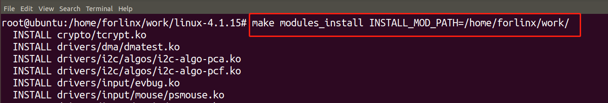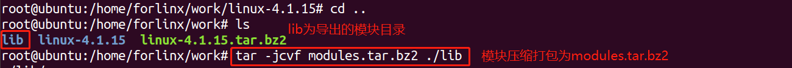
4.3 Creating the File System
Note:
Forlinx provides two types of file systems: the Qt version (rootfs-qt.tar.bz2) and the console version (rootfs-console.tar.bz2);
The file system used by different SoM varies and is described in the software manual.
When adding applications or modifying the file system during use, you can refer to the following methods.
Take rootfs-console.tar.bz2 as an example:
Create a folder where the target filesystem rootfs is stored, e.g. /home/forlinx/work, and enter that directory.
forlinx@ubuntu:~/work$ sudo mkdir rootfs
[sudo] password for forlinx:
forlinx@ubuntu:~/work$ cd rootfs/
forlinx@ubuntu:~/work/rootfs$
Copy the filesystems in the /home/forlinx/work path to the newly created rootfs directory and unpack it.
forlinx@ubuntu:~/work/rootfs$ sudo cp ../rootfs-console.tar.bz2 ./
forlinx@ubuntu:~/work/rootfs$ ls
rootfs-console.tar.bz2 //Copy succeeded
forlinx@ubuntu:~/work/rootfs$ sudo tar xvf rootfs-console.tar.bz2 //Extract file system
Remove the original filesystem archive with the rm command
forlinx@ubuntu:~/work/rootfs$ ls
bin dev etc forlinx home lib media mnt proc rootfs-console.tar.bz2 run sbin sys tmp usr var
forlinx@ubuntu:~/work/rootfs$ sudo rm rootfs-console.tar.bz2
forlinx@ubuntu:~/work/rootfs$ ls
bin dev etc forlinx home lib media mnt proc run sbin sys tmp usr var
forlinx@ubuntu:~/work/rootfs$
After the user has made changes to the file system according to his needs, he can use the tar command to compress the file system again. If you are operating with a regular account, you need to use the fakeroot command emulates root permissions to avoid file permissions changes.
forlinx@ubuntu:~/work/rootfs$ sudo fakeroot tar cvjf rootfs-console.tar.bz2 * //*There is a space in front of it
forlinx@ubuntu:~/work/rootfs$ ls
bin dev etc forlinx home lib media mnt proc rootfs-console.tar.bz2 run sbin sys tmp usr var
Using the “ls” command, you can see the generated “rootfs-console.tar.bz2” compressed package, which is the filesystem image that can be flashed to the development board’s flash memory.
4.4 Application Compilation and Operation
4.4.1 Command Line Application Compilation and Operation
Note: The cross-compiler is installed and the environment variables are set by default for the following operations.
This subsection uses the watchdog test program, the default program is copied to the /home/forlinx/work directory, refer to “4.1.2 Copying the Source Code”
1. Use the cd command to enter the /home/forlinx/work directory;
forlinx@ubuntu:~$ cd /home/forlinx/work/
2. Use $CC to cross-compile, after setting environment variables; $CC is the GCC of the cross-compiler; the specific configuration can be found in the script for setting environment variables: environment-setup-cortexa7hf-neon-poky-linux-gnueabi
forlinx@ubuntu:~/work$ $CC wdttest.c -o wdttest
Use the file command to view the generated file information
forlinx@ubuntu:~/work$ file wdttest
Information results:
wdttest: ELF 32-bit LSB executable, ARM, EABI5 version 1 (SYSV), dynamically linked, interpreter /lib/ld-linux-armhf.so.3, for GNU/Linux 2.6.32,
BuildID[sha1]=400fbba6005ea8e7344df7080ab10d9ef54e3a45, not stripped
From the result, you can see that the compiled 32-bit ARM file.
3. Copy the compiled wdttest to the board via USB flash drive, for example, under the path /home/root, and run the test.
The default user login path is /home/root.
Copy the compiled wdttest program from the USB drive mount path to the current path.
root@fl-imx6ull:~# cp /run/media/sda1/wdttest ./
Give the program executable permission and run it
root@fl-imx6ull:~# chmod 766 wdttest //Set executable permissions for the program
root@fl-imx6ull:~#./wdttest /dev/watchdog settimeout 60 & //Run the program
4. Refer to the “Watchdog Test” section of the software manual for testing.
4.4.2 QT Application Compilation and Running
4.4.2.1 QT Application Compilation
Note: The cross-compiler is installed and the environment variables are set by default for the following operations.
Method 1: Compile with qmake from the command line
forlinx@ubuntu:~/work$ sudo chmod -R 766 audio/ // Add permissions to audio application
forlinx@ubuntu:~/work$ qmake
forlinx@ubuntu:~/work$ make
Method 2: Call qmake to compile through Qt Creator
Add permissions to the audio application
forlinx@ubuntu:~/work$ sudo chmod -R 777 audio/
Open Qt Creator using the command line method (users open it according to their actual path)
forlinx@ubuntu:~/work$ /home/forlinx/qtcreator-3.2.1/bin/qtcreator.sh &
Click File->Open File or Project in Qt Creator, a pop-up window will appear, select /root/Desktop/audio/audio.pro.
The principle is as follows:
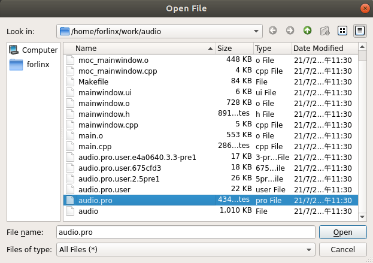
Click “Open”.
A pop-up window will appear to indicate whether to keep the original environment settings, select no, as follows:

The Configure Project window pops up as follows:

Click “Configure Project”.
After opening the project, the interface is as follows:
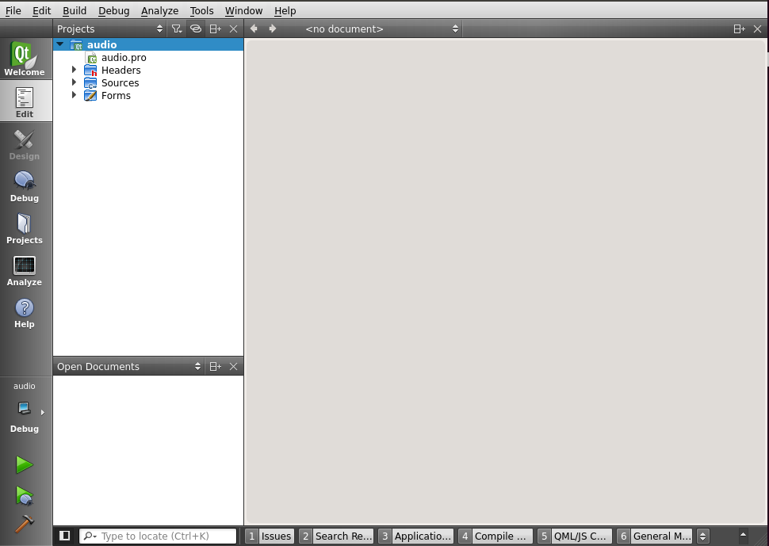
Click Build->Clean All to clear it. (If the intermediate file is not cleared, it can be deleted manually)
Click Projects to uncheck Shadow build

Then click Build-> Build All to compile.
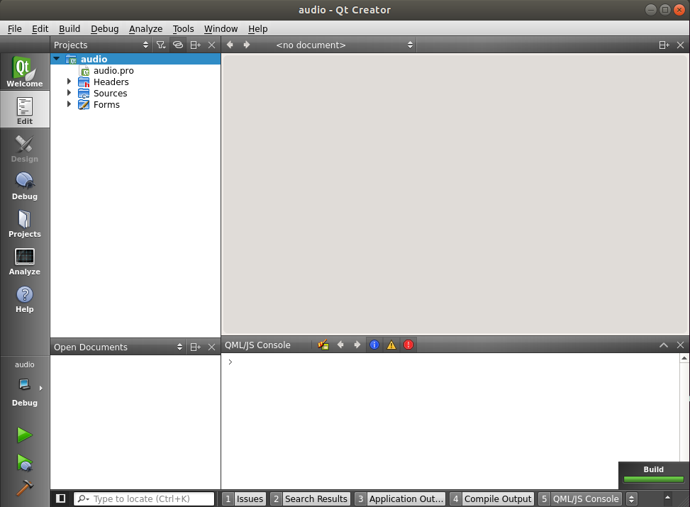
After the Build progress bar in the lower right corner is finished, you will see the newly generated audio binary file in the /files/audio/ directory as follows:

4.4.2.2 QT Application Running
Replace the method of running QT program in the desktop
1. Flash the development board and boot qt system;
2.Copy the generated audio executable file to the SD card, and then insert the SD card to the development board;
3. Execute the following commands to copy the audio to the appropriate directory, replace the original audio application, set executable permissions for the program, and reboot the board after file synchronization.
Use the cd command to enter the default path to the qt program on the development board’s desktop system:
root@fl-imx6ull:~# cd /usr/bin/
Rename the original audio file for backup with the mv command
root@fl-imx6ull:/usr/bin/# mv fltest_qt_audio fltest_qt_audiobak
Copy the audio program in the SD card to the current directory.
root@fl-imx6ull:/usr/bin# cp /run/media/mmcblk1p1/audio ./fltest_qt_audio
Give executable permissions and save to reboot the development board:
root@fl-imx6ull:/usr/bin# chmod a+x fltest_qt_audio // Grant executable permissions to all user groups.
root@fl-imx6ull:/usr/bin# sync // Synchronize files.
root@fl-imx6ull:/usr/bin# reboot // Reboot the development board.
4. After the board restarts, if the audio test application in the Qt interface is the latest version and you can play audio by clicking on “play,” it indicates that the newly compiled Qt application is functional. This also confirms the successful configuration of the Qt application development environment.
Method of testing the QT program individually
Copy the generated audio executable file to the SD card, insert the SD card to the development board, and copy the program to the/home path;
Set executable permissions to the program;
You need to use the command export DISPLAY=:0.0 to load the QT environment variables before testing the QT program.
Copy the audio file from the sd mounted path to the /home path of the development board.
root@fl-imx6ull:~#cp /run/media/mmcblk1p1/audio /home
Go into the /home directory with the cd command and give audio executable permissions
root@fl-imx6ull:/home# chmod a+x audio
Set the environment variable for QT
root@fl-imx6ull:/home# export DISPLAY=:0.0
Run the audio application
root@fl-imx6ull:/home# ./audio
4.4.2.3 QT Desktop (EMMC Version Only)
Startup Applications
After the Qt system boots up, the desktop program starts by default. If you need to automatically start a user program, please modify the following file in the file system: /etc/matchbox/session.
Add your own application after matchbox-desktop &. For example, to add a ping test program: fltest_qt_ping &.
The ping test program will then start automatically when the system boots.
If you comment out the following part:
# matchbox-desktop &
# matchbox-panel --titlebar --start-applets $START_APPLETS --end-applets $END_APPLETS &
The desktop will not run and the title bar will not be displayed.
If you modify the match-panel option, the content of the title bar will be changed. For example, if you remove clock from “END_APPLETS=clock,battery,$KEYBOARD_APPLET,systray,startup-notify,notify”, the time will not be displayed. e.g.:
START_APPLETS=showdesktop,windowselector
END_APPLETS=battery,$KEYBOARD_APPLET,systray,startup-notify,notify
matchbox-panel --titlebar --start-applets $START_APPLETS --end-applets $END_APPLETS &
Add Desktop Application
This section describes how to set up folders such as Forlinx and Application:
1. Folder settings are stored in: /usr/share/matchbox/vfolders e.g: Forlinx.directory
[Desktop Entry]
Name=Forlinx
Name[de]=Einstellungen
Comment=Forlinx test app
Comment[de]=Forlinx test app
Icon=mbfolder.png
Type=Directory
Match=Forlinx
The important thing is the Match property, which determines what type of App is displayed in the folder
Folders are displayed in the following order: /usr/share/matchbox/vfolders/Root.order
Forlinx
Applications
Utilities
Games
Settings
All
Application Settings:
Icon directory: /usr/share/pixmaps
Application Settings: /usr/share/applications
Each application corresponds to a.desktop file. Take Ping as an example:
[Desktop Entry]
Name=Qt5 Ping
Exec=/usr/bin/fltest_qt_ping
Icon=ping-icon
Type=Application
Categories=Forlinx;
Each application corresponds to a.desktop file. Take Ping as an example:
It specifies the icon, the location of the executable program, and the folder in which it is displayed on the desktop.